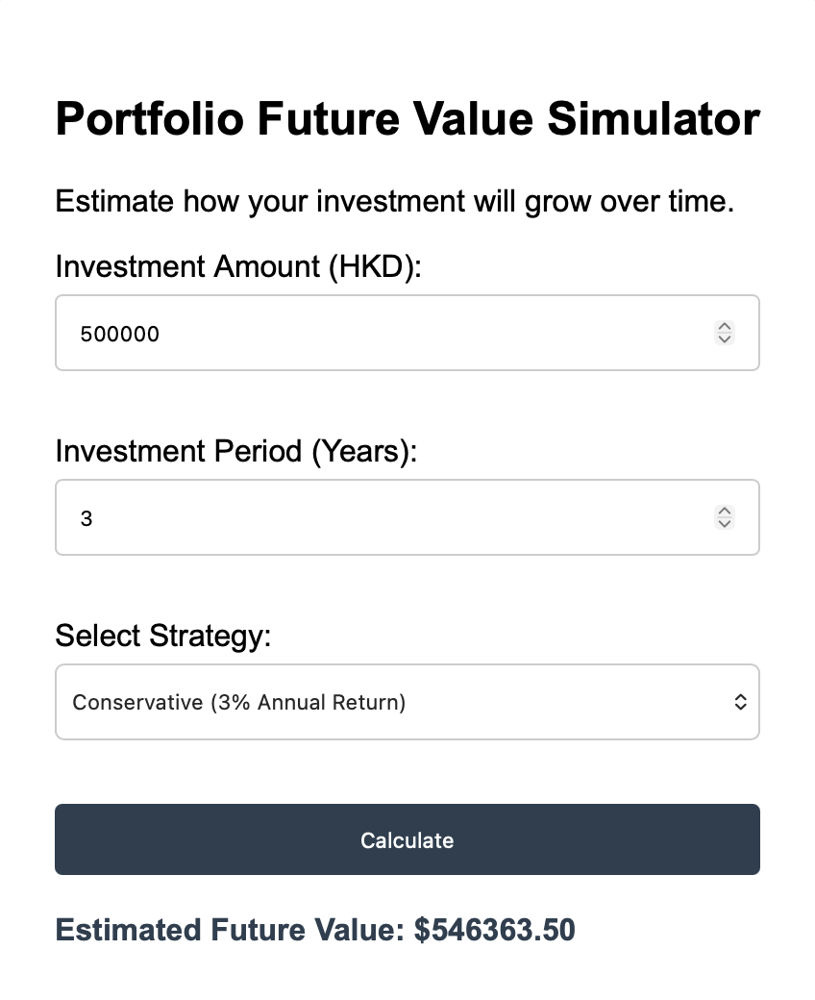
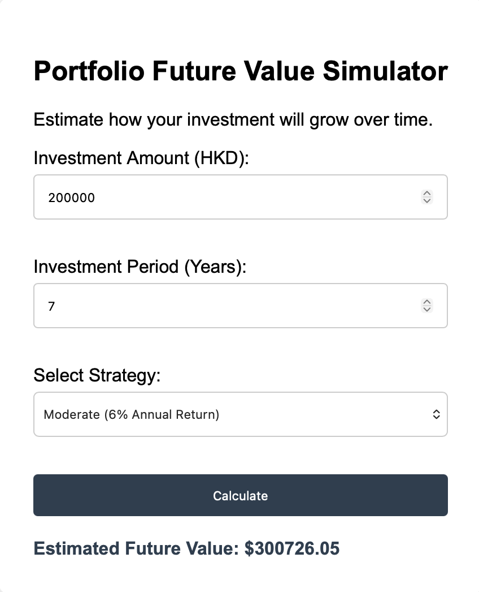
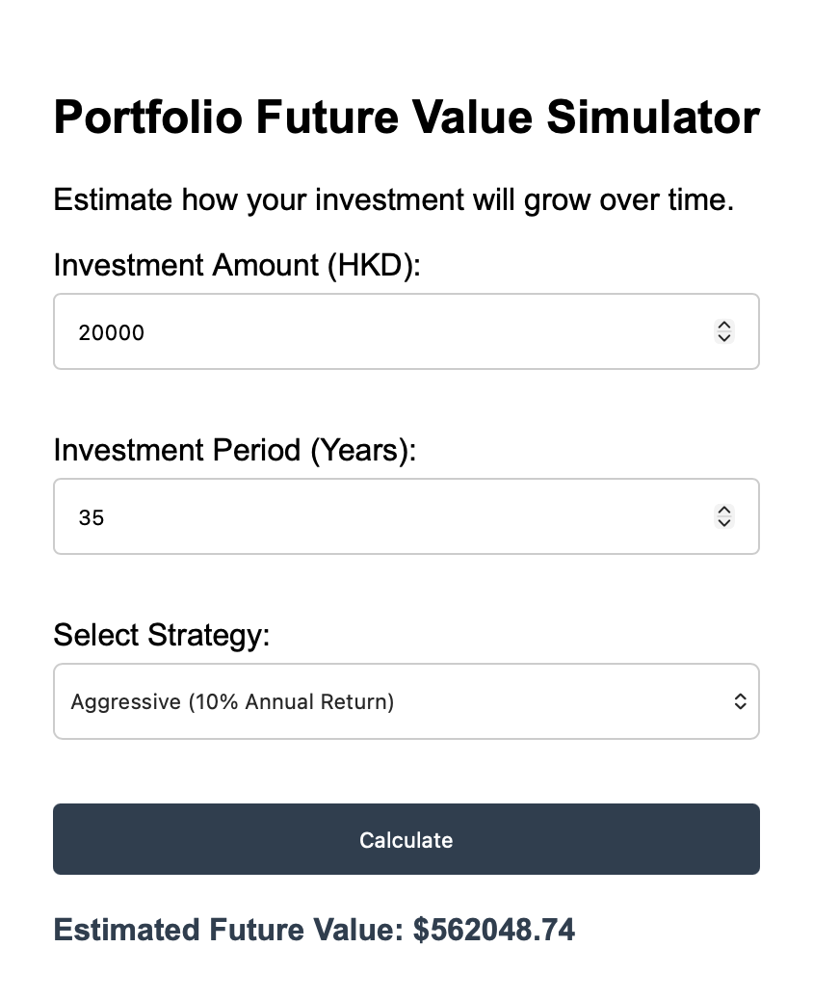

Investor Profile: Mr. Chan, a 60-year-old nearing retirement, has just received a lump sum from his MPF. He plans to use HK$500,000 to pay for the premium of a Home Ownership Scheme (HOS) flat in 3 years.
Strategy: Conservative (80% Fixed-Income / 20% Equity).

Investor Profile: Ms. Wong is a 28 years old healthcare professional with HK$200,000 in initial capital, aiming to accumulate a residential down payment over a 7-year horizon.
Strategy: Moderate (50% Equity / 50% Fixed-Income).

Investor Profile: A 22 years old CityU fresh graduate investing a HK$20,000 into a retirement-focused portfolio with a 35-year time horizon.
Strategy: Aggressive (90% Equity / 10% Fixed-Income).

While this simulation give a basic knowledge of financial planning, future works will fix some current limitations: